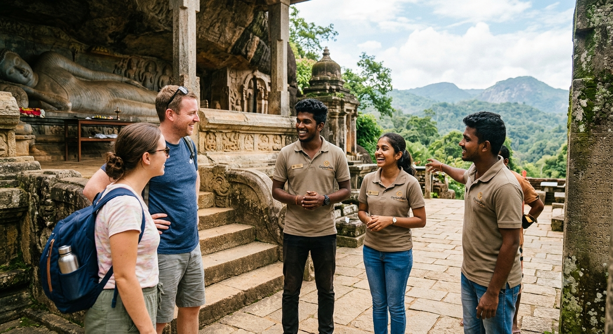

Who We Are
For us at CeylonVibes, journeying is far deeper than checking off destinations; it is about embracing local traditions and weaving unforgettable memories. Established in 2026, we focus on bringing you face-to-face with the genuine spirit and unfiltered beauty of Sri Lanka.
Our team travels to every corner of this beautiful island to bring you handpicked destinations, hidden gems, and local secrets. Whether you seek adventure or tranquility, we are here to guide your footsteps.
